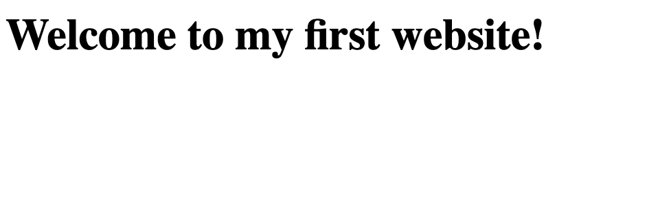
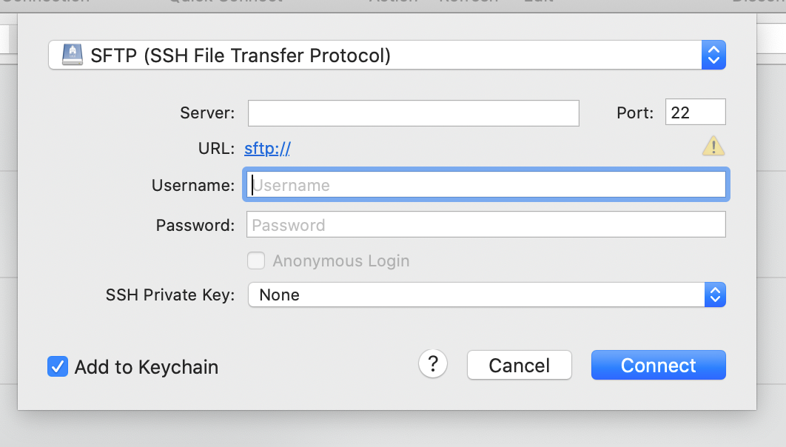
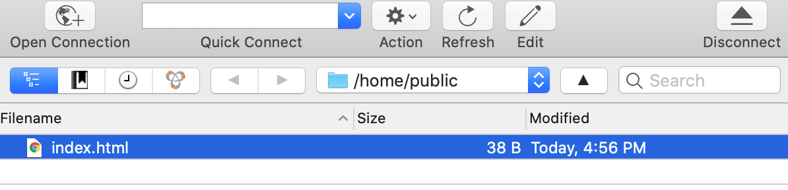

Welcome to my first website!
Steps for Setting Up Web Hosting
Here is a specific process to get your own website on the internet with your own web hosting. We also have an easy way to create your own home page on CodeHS, where you can write HTML, CSS and JavaScript and get a custom codehs.me subdomain (mine is at jkeesh.codehs.me).
Step 1: Register web hosting account
Go to NearlyFreeSpeech.net and sign up. They offer web hosting starting at 1 cent per day and you can try it for free. Once your profile is created, create an account. Once your account is created, create a site. You’ll enter in your unique site name. I also go and change my password.
Step 2: Buy the domain
Pick the name of your website. I bought the domain setupyourwebhosting.com on NearlyFreeSpeech.net for $10 per year. This is a real website with these instructions. You can buy the domain under the domains tab, and then click “Register a New Domain.” When prompted about DNS, choose, “Set up DNS and Name Servers Automatically.”
Step 3: Download an FTP program
The FTP program will allow you to upload files onto your site. FTP stands for File Transfer Protocol. Download Cyberduck and install it.
Step 4: Set up a text editor
I downloaded Sublime Text to write code on my computer.
Step 5: Create an index.html file
We’re going to create the file that will show up on your website. Open Submlime Text. Create a new file. In that file just type
<h1>Welcome to my first website!</h1>
Then save that file on your Desktop as index.html. Now I go double click that file and it will open in my Google Chrome web browser and it should look like this:

Step 6: Upload your HTML file to your site with FTP
Now, go to nearlyfreespeech.net, and open the sites tab. Click into the site you created. There should be a section that shows your SSH/SFTP information.
Now, open Cyberduck. Click “+” to create a connection.

Now under Server enter your SSH/SFTP Hostname. Under Username and Password, enter your username from the SSH/SFTP section, and your password for the site. Once you are connected you will be in a folder with nothing in it. Now drag your index.html file from your Desktop into this folder in Cyberduck.
When it’s uploaded it will look like this:

Step 7: Connect your domain to your site
Now, click in to your site under the “sites” tab. Under “Site Names & Aliases” click “Add a New Alias.” Now enter in the name you just bought. I type in www.setupyourwebhosting.com. Then I also go and add setupyourwebhosting.com as another alias.
Step 8: Visit your site!
It should work! Visit your website now and you should see your site load with the text you typed in index.html. When you want to update the content, change the index.html file on your computer, save it, and drag the new version into Cyberduck.